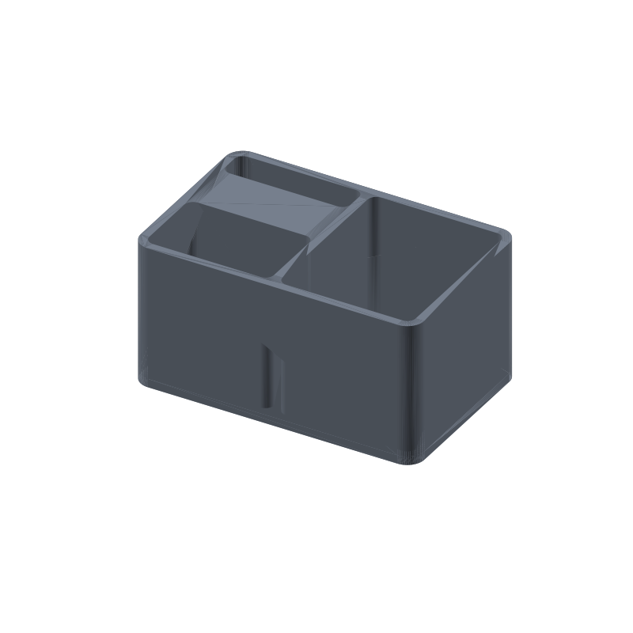

Pen organizer STL, three slots, 100 × 64 × 50 mm desk caddy
Desk pens drift into a pile, and the one you want is always at the bottom. This caddy gives them three places to be: a wide 44 × 27.5 mm front slot for a handful of pens standing together, a narrow 44 × 11 mm rail that lines up pencils single file, and a 47 × 58 mm tall slot that takes markers standing or scissors lying flat. All three compartments print from one file with vertical walls, so the slicer needs no supports.
The narrow rail does the sorting. At 11 mm across it holds anything up to about 10 mm thick: pencils, gel pens, fineliners, a stylus. A 12 mm marker will not wedge into it, and it does not have to, because the tall slot is wide enough for two markers side by side or a pair of scissors laid flat. The front slot takes the pile that used to live in the mug.
This page carries the measured spec sheet: dimensions taken from the mesh, the slots ray-scanned against the export, and preview renders, so you can check the numbers before you slice.

The STL is one material and prints in one color; the renders shade the walls by light angle so the slots read as geometry, not paint.
Spec sheet, measured from the mesh
| Spec | Value |
|---|---|
| As exported | One solid caddy 100 × 64 × 50 mm, 6 mm rounded outer corners, 3 mm rounded slot corners |
| Compartments | Three open-top slots, all 47 mm deep: 44 × 27.5 mm pen slot, 44 × 11 mm pencil rail, 47 × 58 mm tall slot |
| Fit | The rail holds pens and pencils up to about 10 mm thick single file; the pen slot holds a handful upright; the tall slot takes markers standing or scissors flat |
| Shelf | 19.5 mm solid strip between the pen slot and the rail, full height, printed as part of the caddy |
| Walls | 3 mm on all four sides and between the slots |
| Floor | 3 mm solid under all three slots (ray-verified) |
| Volume | 111.8 cm³ ≈ 139 g PLA solid, less at typical infill |
| Flat on the plate, vertical walls only, no supports, no bridges; about 5 h at 0.2 mm layers (geometry estimate) | |
| Mesh check | Watertight, winding consistent, euler 2, 1396 faces (trimesh 5.1.0, 2026-09-10) |
| Files | STL (70 KB) and 3MF (17 KB) plus the parametric generator script gen_penorganizer12.py |
| Params | w 100, d 64, h 50, wall 3, floor_t 3, corner_r 6, slot_r 3, left_col_w 44, slot_gap 3 |
| License | CC-BY 4.0 on MakerWorld; royalty free, no AI training, direct from us |
How the slots were verified
The slot numbers came off the exported mesh, not the parameter sheet. An X scan across the front slot row and the rail row measured widths of 44 and 47 mm; a Y scan through the left column measured the 27.5 mm front slot and the 11 mm rail with the 19.5 mm strip between them reading solid at full height; a Y scan through the tall slot measured 58 mm end to end. Every slot floor sits 47.0 mm below the rim, and the floor reads solid under all three slot centers. The trimesh volume comes out at 111.8 cm³.
What that means at the desk: the rail keeps one clean row of pens where you can see every barrel, the front slot takes the handful, and the tall slot keeps markers and scissors off the pens so nothing hides. The strip between the left slots runs the full 50 mm height, so the long wall in front of the rail cannot flex when you pull a pen out.
Every wall in this part is vertical and every surface is either flat on the plate or a vertical extrusion, so nothing needs supports and there are no bridges. The slots are blind holes from the top with solid floor below, and the outer corners are 6 mm rounds.
Print notes
Print the file as exported, flat on the plate: blind slots with solid floor, vertical walls, no overhangs, so the slicer needs no supports and no brim beyond plate adhesion. 0.2 mm layers and three perimeters are a reasonable default.
I have not test-printed this yet. If you print it, tell me what fits in the tall slot. The knobs are in the generator: w, d and h for the footprint and height, left_col_w for the width of the left column, slot_gap for where the back rail starts, plus wall, floor_t and the two corner radii. Pens stand proud of the 50 mm rim by design; if you want them out of sight, raise h and the walls grow with the slots.
The generator (gen_penorganizer12.py) takes the footprint, wall, floor, corner radii, and slot layout as parameters. Change them and rerun: the slots, the strip between them, and the outer corners all recompute, so a wider rail or a taller caddy is a number change, not a redesign.
Honest limits
The 5 hour print figure is a geometry estimate from the mesh volume, not a timed print, and the caddy is mesh-verified but untested on a printer. The fit check that matters is whether the 11 mm rail takes your pens without wedging; that is the first thing to confirm on a real print.
PLA is fine for a caddy that lives on a desk, but a windowsill in direct sun or a closed car in summer can creep it. For those spots, print the same generator output in PETG.
The rail takes up to about 10 mm and nothing thicker; chunky markers go in the tall slot. If you want a wider rail, lower slot_gap in the generator: the rail grows and the strip between it and the front slot shrinks to match.
Where to get the files
The pen organizer is staged on our MakerWorld account and goes public on our profile once it is submitted and clears review.
More printed organizers and bench tools, with a status table for the pool: 3D printed desk organizers and printable tools. The rebuild-everything approach, generator parameters per model side by side: parametric 3D printed tools.
Compare all 20 models by solid mesh volume in the STL volume ledger.
FAQ
What fits in the 11 mm rail?
Anything up to about 10 mm across: pencils, gel pens, fineliners, a stylus. The 44 mm length takes them single file, so each barrel stays visible and grabbable. A 12 mm marker will not seat in the rail; the tall slot is wide enough for it standing, and for scissors lying flat across the 58 mm opening.
Why is there a solid strip between the two left slots?
The left column is 44 mm wide: the front slot takes 27.5 mm of it, the rail takes 11 mm, and the 19.5 mm between them stays solid at full height. That strip stiffens the long front wall of the rail, and it prints as part of the caddy, so there is no glued-in divider to come loose.
Can I resize it or change the slots?
Yes. Edit the PARAMS block in gen_penorganizer12.py and rerun it: footprint (w, d, h), wall, floor_t, the two corner radii, left_col_w and slot_gap. The slots and the strip recompute from those, and the script asserts every slot stays at least 10 mm, so a wider rail or a taller caddy comes out as a new STL with the same 3 mm walls and solid floor.